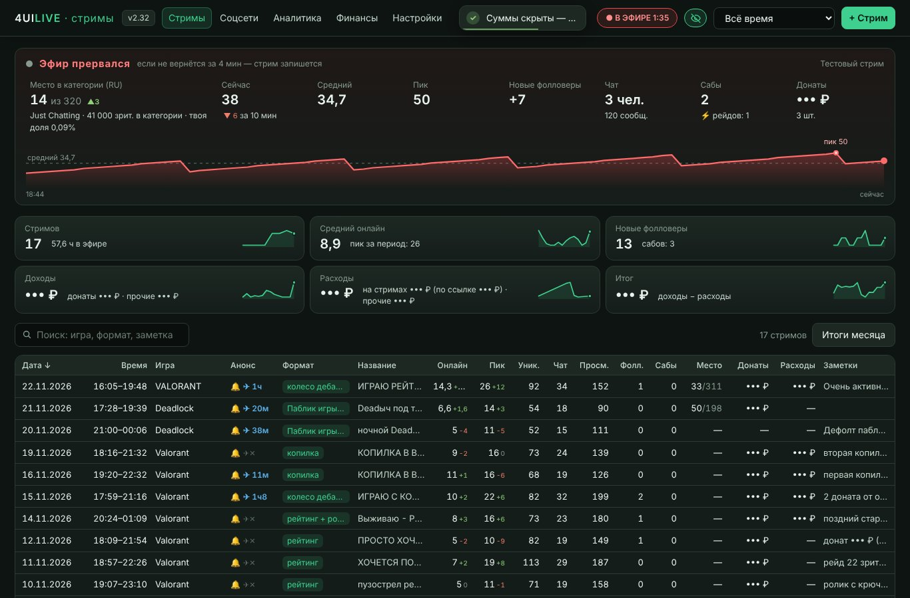
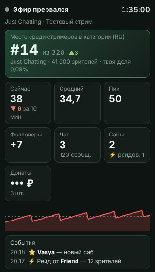

Вся статистика твоих стримов — в одном месте
Программа сама записывает каждый эфир: онлайн, фолловеров, место в категории, чат, сабы и донаты. А потом показывает, какие игры, форматы, время старта и ролики приводят зрителей.


👁 Суммы скрыты одной кнопкой — можно показывать на стримеЧто умеет программа
Подключаешь Twitch один раз — дальше всё записывается само, пока программа открыта. Даже свёрнутая.
Стримы записываются сами
Каждую минуту: онлайн, новые фолловеры, участники чата, сабы, рейды. Эфир закончился — он уже в таблице.
Место в категории
Каким по счёту ты идёшь среди стримеров своей игры и языка — прямо во время эфира и в среднем за стрим.
Донаты и деньги
DonationAlerts, DonatePay и DonateX: вся история, топ донатеров, суммы чистыми после комиссии, цель на месяц.
Что приводит зрителей
Shorts, TikTok, YouTube и Telegram-канал: сколько фолловеров пришло после ролика или анонса.
Когда стримить лучше
Лучшее время старта, сравнение игр и форматов, графики по месяцам и подсказки, что работает.
Итоги месяца картинкой
Онлайн, фолловеры, лучший стрим и рост к прошлому месяцу — готовый пост для Telegram, ВК или сторис.
Панель прямо в OBS
Добавь одну ссылку в «Док-панели» OBS — и статистика эфира будет рядом с микшером. Саму программу можно не разворачивать.
- Место в категории со стрелкой: поднялся ты или опустился
- Онлайн сейчас, за 10 минут, средний и пик — с графиком
- Фолловеры, чат, сабы, донаты и лента событий: кто задонатил, кто зарейдил
- Глазик прячет все суммы — в программе и в OBS, — чтобы не светить доход на стриме
Цены
Все возможности в любом тарифе. Подписка покупается в Telegram — ответим и пришлём ключ.
Сначала попробуй: 7 дней бесплатно с полным набором функций. Ключ подписки привязывается к одному компьютеру.
Установка за минуту
Нужен компьютер с Windows 10 или 11 (64-бит).
Скачай
Кнопка «Скачать для Windows» вверху страницы — файл 4UILIVE-Stats-Setup.
Запусти установщик
Если Windows покажет синее окно — нажми «Подробнее» → «Выполнить в любом случае» (см. ниже).
Войди через Twitch
Программа покажет код — подтверди его на twitch.tv/activate. Без паролей и ключей.
Стримь
Держи программу открытой (можно свёрнутой) — эфир запишется сам. Обновления приходят сами.
Подробнее
Так Windows реагирует на любую программу без платной цифровой подписи от крупной компании — это не значит, что в ней что-то не так. Нажми «Подробнее», затем «Выполнить в любом случае». Программа ставится только для твоей учётной записи и не трогает системные файлы.
Вопросы
Где хранятся мои данные?
Только у тебя на компьютере — в папке «Документы\4UILIVE Stats». Раз в день программа сама делает резервную копию. Никакие данные никуда не отправляются.
Нужно ли давать пароль от Twitch?
Нет. Вход идёт через официальную страницу Twitch: ты подтверждаешь код, и программа получает доступ только на чтение статистики. Отключить можно в любой момент.
Как подключить донаты?
DonatePay и DonateX — вставить токен из личного кабинета. DonationAlerts — создать своё бесплатное приложение на их сайте (2 минуты, пошаговая инструкция есть в программе).
Что будет, если программа закрыта во время стрима?
Пока она закрыта, онлайн не записывается. Открой её — запись продолжится с этого момента, а после эфира стрим всё равно появится в таблице.
Можно показывать программу на стриме?
Да: кнопка-глазик в шапке (или клавиша H) прячет все суммы — в программе и в панели OBS.
Как обновлять программу?
Никак — она сама скачивает новые версии и предлагает перезапуститься. Твои данные при обновлении не меняются.
Попробуй 7 дней бесплатно
Скачай, войди через Twitch — и следующий эфир запишется сам.